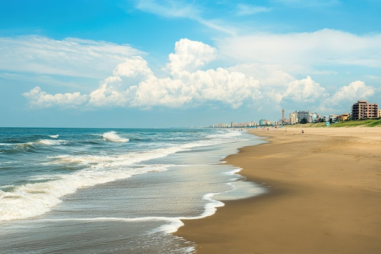
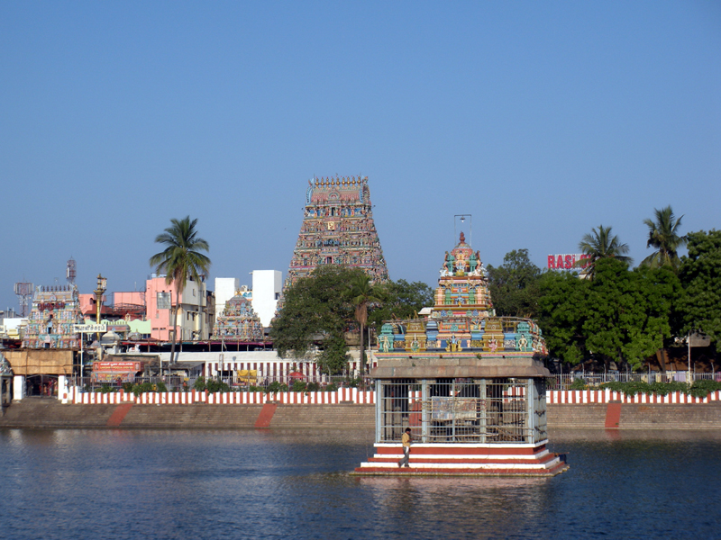
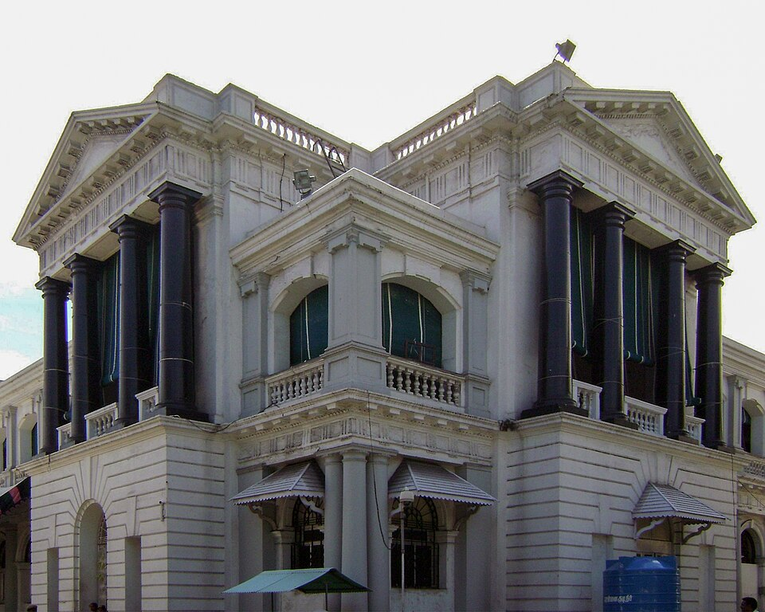
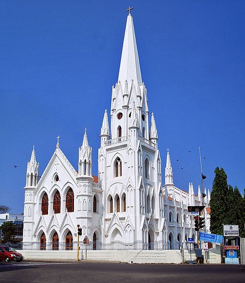
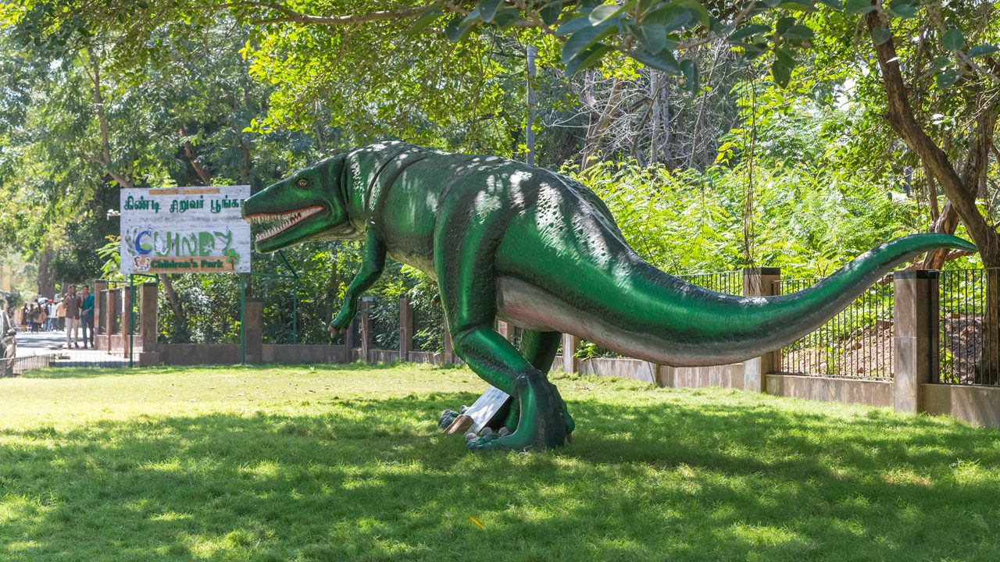

Chennai Capital of Tamil Nadu

History
Chennai, formerly known as Madras, was founded in 1639 by the British East India Company. It served as an important administrative center during British rule and has grown into a major metropolis.
Languages
Tamil, English, Telugu
Famous Food
Idli, Dosa, Filter Coffee, Chennai Sundal
About Chennai
Chennai is the capital city of Tamil Nadu, located on the Coromandel Coast of the Bay of Bengal. It is an important center for education, IT industry, culture, and transportation.
The city beautifully blends traditional culture with modernity, featuring ancient temples alongside IT corridors. Chennai is known for its classical music and dance, vibrant film industry (Kollywood), and thriving automobile industry.
Why Visit Chennai?
Capital City
Capital city of Tamil Nadu with rich political and cultural heritage
IT and Industrial Hub
Major IT and industrial hub of South India
Rich Culture and History
Rich culture with classical music, dance, and traditions
Beautiful Coastline
Home to one of the world's longest urban beaches
- Capital city of Tamil Nadu
- IT and industrial hub
- Rich culture and history
- Beautiful coastal city with long beaches
Important Places

Marina Beach
One of the longest urban beaches in the world, stretching over 13 km

Kapaleeshwarar Temple
7th-century temple dedicated to Lord Shiva, famous for Dravidian architecture

Fort St. George
First British fortress in India, built in 1644, now houses the Tamil Nadu legislative assembly

Government Museum
One of India's oldest museums with rare artifacts, bronze sculptures, and archaeological findings

San Thome Basilica
Roman Catholic minor basilica built over the tomb of St. Thomas the Apostle

Guindy National Park
One of the few national parks located inside a city, home to deer, monkeys, and various birds
Visitor Information
Best Time to Visit
November to February when weather is pleasant and cool
How to Reach
Airport: Chennai International (MAA)
Railway: Chennai Central, Egmore
Stay Options
Luxury hotels to budget accommodations
Tourist Helpline
+91 44 1234 5678
Current Weather
Explore Chennai on Map
📍 Click markers – each place name has a unique bright color. Use the search bar above to find any place.